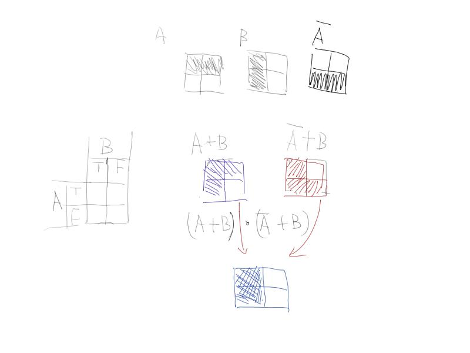

Conjunctive normal forms are AND of ORs.
$$(A \lor B) \land (A \lor \neg B)$$
另一种写法.
$$ (A + B) \times (A + \overline{B})$$
A can be true or false, B too.
Draw a picture.

定义有限集合 $A_k = {x_0, x_1, x_2,\ldots, x_k }$
每个元素 $x_i \in {T, F}$, 所以 $|A_k| = 2^k, A_k \in {T,F}^k$
.. 额, 这个好像不是我想要的..
称 ${T,F}^k = \mathbb{2}^k$ 为 真值空间. $A_k$ 是这个空间的一个点.
一个 CNF 是真值空间的一个子集.
定义 $X_0 \subset \mathbb{2}^k$, 一个子空间, where $x_0 = T$, 定义 $\overline{X_0} \subset \mathbb{2}^k$, where $x_0 = F$,
$$(A \lor B) \land (A \lor \neg B)$$
就是
$$(X_A \cup X_B) \cap (X_A \cup \overline X_B)$$
这算是 CNF 的语义.
还有语法的定义.
type literal = string * bool
type clause = literal list
type cnf = clause listCNF 的表达能力?
CNF, 包含一个字母表 $A_k$,
Boolean satisfiability problem
SATisfiability problem. 给定一个 CNF, 在 $\mathbb{2}^k$ 找一个 点, 它在 CNF 中.
如果有这样一个解(点), 验证很容易, 但是找这个点是 NP-complete 的.
A simple general SAT solver (copied from stanford cs242):
let satisfiable (atoms : string list) (cnf : cnf) : assignment option =
let rec iter_cnf (assignment : assignment) (cnf : cnf) : assignment option =
match cnf with
| [] -> Some (List.fold atoms ~init:assignment ~f:(fun assignment atom ->
match String.Map.find assignment atom with
| None -> String.Map.add assignment ~key:atom ~data:true
| Some _ -> assignment))
| clause :: cnf' ->
List.fold clause ~init:None ~f:(fun acc (atom, affinity) ->
(match (acc, String.Map.find assignment atom) with
| (Some _, _) -> acc
| (_, None) -> (*none, none*)
iter_cnf (String.Map.add assignment ~key:atom ~data:affinity) cnf'
| (_, Some affinity') ->
if affinity = affinity' then iter_cnf assignment cnf'
else None))
in iter_cnf String.Map.empty cnf不是遍历 $\mathbb{2}^k$, 而是这么看 CNF:
CNF 是 很多个 ORs 的 AND, 要满足这个CNF, 需要满足每一个 ORs. 每一个 ORs 都是很多个 逻辑变量的 OR, 其中只要有一个满足就行了.
cnf = clause :: cnf'
clause = literal :: clause'
add this literal to assignment, recursively call iter_cnf assignment cnf'
如果不行, 就换下一个 literal, 直到 clause’ 为 nil, 说明确实找不到.
这代码正确性怎么证明?
cnf 是一个 nested list. 从外层 list 递归可以吗?